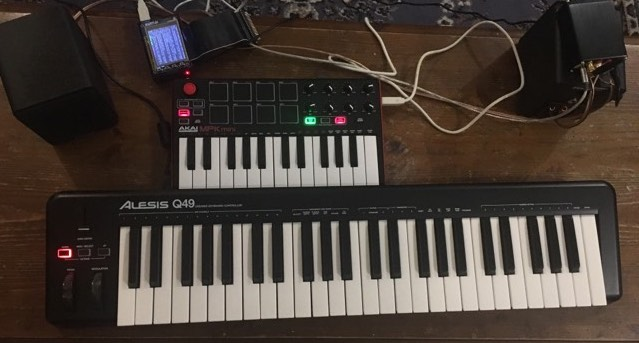
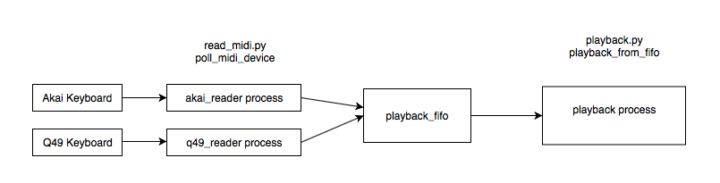
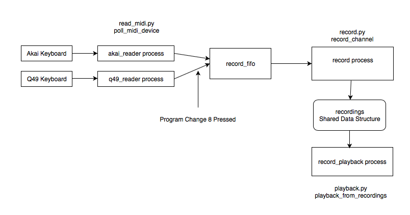

Aayush Beri ab2466, Savarn Dontamsetti sd549
Our project objective was to create a loop recorder using the Raspberry Pi. As a baseline we aimed to make the loop recorder capable of taking input from MIDI keyboards while having support for multiple MIDI tracks and instruments. Our further goals included expanding the functionality to take vocal and electric guitar input.
As background, a loop recorder is a device that allows a musician to record and loop different snippets of music and play them all simultaneously. With such a device, a single musician can emulate the sound of a band by pre-recording the parts of the other members and playing them as need be. Here is an example of Ed Sheeran using a loop recorder for "Shape of You". We modeled the use case of our project on this video and were able to develop a loop recorder capable of taking input from MIDI keyboards with support for 7 tracks. The user is able to toggle both volume and instrumentation using on-keyboard controls. The user is also able to play and hear music on both keyboards without necessarily recording what they play. Hence, in addition to a loop recorder we provide users with fully functioning instruments. The setup is as follows:

Pictured on top is the Akai MPK Mini and on the bottom is the Alesis Q49. The square buttons on the top-left side of the Akai are used to toggle instruments and the knobs on the right side toggle volume. Users start a recording by tapping the top-right square button (button 8) and the Pi begins the recording. The recording stops after a predefined amount of seconds determined by "beats per minute" and "number of measures" constants set in the code. After the recording has stopped, the Pi will continuously play the corresponding track back. The user can still play both keyboards on top of the track and also record other tracks to be looped alongside the first one. In order to assist users, we also programmed in a built in metronome to help them keep time.
Our project can be subdivided into 3 main tasks: reading MIDI input, audio playback, and recording/looping. All of these tasks need to happen in parallel. We looked at three major ways to parallelize - threads using the Python Threading library, running separate processes in separate windows, and running multiple processes in the same window through the same parent process using Python Multiprocessing. We learned about Python's Global Interpreter Lock (GIL), an optimization that provides better single-threaded performance but serializes multi-threaded programs by putting a lock around the interpreter and thus making it so only one thread can run at a time. Hence when we tried using threads we noticed significant latency, for example between pressing a key on the keyboard and hearing an output. This issue went away when we used multiple processes in different windows, but it was difficult to manage all the windows as a user.
We then stumbled upon the Multiprocessing library, which provides an interface very similar to the Threading library but uses processes instead of threads to get around the GIL. Through it, we got both the ease of programming and the level of performance we desired. In order to communicate between the processes, we use a combination of Fifos and Multiprocessing provided shared memory variables. We use Fifos to pass raw MIDI signals from the reading process to the playback and record processes using two fifos, a playback_fifo and a record_fifo. We use shared memory variables to communicate recorded tracks between the record process and the playback process as well as to communicate volumes between the read process and the playback process. The decision of when to use a Fifo versus when to use shared memory ultimately boiled down to our use cases - for cases where the shared information was simple text, we used Fifos. For more complex objects such as the recordings, we used shared memory to avoid serialization/deserialization overhead.
In total, we create 7 separate processes: a metronome process, a volume control process, separate read processes for both keyboards, a generic playback process (to play all notes pressed on the keyboard), a record process, and a record playback process (to loop the recorded tracks). All processes and shared data structures are created and run in main.py.
Our MIDI keyboards (Akai MPK and Alesis Q49) are connected to the Pi via USB and send signals already encoded in MIDI. In order to read these signals, we made use of a Python library called Mido. Reading from a MIDI device in Mido is syntactically similar to reading through a file - our code specifically uses the non-blocking methods provided by Mido to reduce latency. There are three types of signals we use in our project: note on/off, program change and control change. As the name suggests, note on/off signals indicate that a note should be played or stopped. Program change and control change are more generic control signals - we use program change signals to toggle instruments as well as start recording. They are essentially discrete unary signals. Control change signals, on the other hand, have continuous values. We use them to control the volume of each track we record. We read note on/off signals from both the Akai and the Alesis keyboards, but only read program and control change signals from the Akai.
To help match the raw MIDI input provided by Mido, we use regular expression matching using the Re standard library. Once matched, we handle each signal slightly differently. For note on/off signals we echo the signal to the playback_fifo so that the playback process (described next) can output the appropriate sounds. If a recording is in progress, we also echo to the record_fifo. For control change signals, we modify a shared volumes data structure. For instrument changes, we also just change a shared variable. For a start recording program change, we send a signal to the record_fifo to let the record process know it can begin recording.
The code for this section can be found in read_midi.py
We make use of the Mingus library for audio output. It is built on top of fluidsynth, an open source audio synthesizer. When a new line is sent to the playback fifo by the reader processes, the playback process reads the line and immediately plays/turns off the note. Using regular expression matching, we first identify whether there is a note on or note off event. Once we identified the type of event, we converted the events to our own wrapper class around the Mingus.containers Note class called NoteSignal which we define in signals.py. We then play the note using NoteSignal's play() function which is built on top of the Mingus.Container Note's play function.
NoteSignal has attributes to identify the device, time of event, note pressed, velocity, whether it was a note on or note off, and what channel the note is being sent to. When a NoteSignal is initialized, a Note object is also created using mingus.containers. The Note object is set to the key specified and the channel specified. As part of its parameters, the play() function takes in a volume. It first sets the note velocity to this volume. Then it plays the note on the specified channel if it is a note on event and stops the note if its a note off event. Playing of notes is handled through fluidsynth via mingus.
The code for this section can be found in playback.py
Here is a graphical representation of our playback architecture:
When program change 8 is pressed, the read logic sends a "Start" message to the record fifo. The record process reads this message and begins recording a new track - by this we mean it creates an empty array and appends every incoming note on/off signal to the array with a timestamp relative to the start of the recording. The recording continues for a fixed amount of time determined by the bpm (beats per minute) and beats_per_bar values defined in constants.py. This time is kept track of in the read process, and after the time has elapsed the read process sends a "Stop" message to the record fifo. Upon consuming the "Stop" message, the record fifo will add the array to a shared recordings variable. The code for this segment can be found in record.py
The record playback process runs as an infinite loop that initializes a start time at the beginning of the loop and iterates through the recordings variable. For every recording, it keeps track of the next unplayed note signal and compares the timestamp of the note to the time elapsed from the loop start. If the current time elapsed is greater than or equal to the timestamp of the note signal, it plays the signal. It then moves on to the next recording and repeats this process until the time elapsed from start is greater than the record length. In the case when a new recording is added while the last loop playback is not complete, the code waits for the loop to complete before adding the new recording. The code for this segment can be found in the playback_from_recordings method in playback.py.
Here is a graphical representation of our record architecture:
The metronome is a set of notes on channel 7 (our drum channel) that repeats every beat. We first take in the empty recordings dictionary and set the first 6 keys to empty lists. We basically set the notes at fixed time intervals (60/bpm) apart starting at t = 0. We repeat these time intervals in channel 7's recording list beats_per_bar times as specified in constants.py
The code for this segment can be found in the metronome.py
The volume process simply initializes the volume for all channels to max (127). Upon a volume change via control signal, the read logic in read_midi.py handles the signal inline and changes the shared volumes data structure.
We chose to use of Python's Virtualenv library to create an isolated environment for our project. Doing so ensured that our packages are not affected by other packages installed on the Pi. The full set of Python dependencies can be found in the requirements.txt file, and one can easily install the requirements by running pip install -r requirements.txt
We were able to successfully meet our baseline goals; that is to say, we were able to read and loop input from two MIDI keyboards. We did not have enough time to attempt vocal or electric guitar input. At the end everything worked as planned, but we had some difficulty working with the input and output libraries until we found Mido and Mingus, respectively. We also had some trouble minimizing user-perceived latency between playing notes on the keyboard and hearing the output, ultimately finding that Multiprocessing was the best way to do so.
Here is a video of our loop recorder in action:
For this project we implemented a loop recorder built with a Raspberry Pi and two MIDI keyboards. We found that in general there are many Python libraries for audio input and output. We were able to combine Mido, a MIDI input library, with Mingus, an output sound synthesizer, with our own bindings and looping logic. Our biggest takeaway was that Python's multithreading leaves much to be desired because of the Global Interpreter Lock, which essentially prevents the execution of multiple threads at the same time on different cores. Because of this, having different threads for playback/record/loop logic yielded too much user noticeable latency. We also found that even when using Multiprocessing to get around this, synchronization between the different processes was quite challenging in itself.
As mentioned we were not able to incorporate vocal or electric guitar input, so that is certainly one thing we want to continue working on. We also want to provide the user with a more powerful control panel to allow them to control things like record length without having to go through the code base. Lastly, we would like to incorporate pedals to toggle tracks (as in the example linked above) so that users can keep their hands on their instruments at all times.
Our project did not make use of any external hardware besides the Raspberry Pi. We did, of course, use two MIDI keyboards and standard 3.5 mm speakers as part of the project. These components are not counted towards $100 limit because they are technically not part of the loop recorder, rather the loop recorder is used alongside them. For reference, the two keyboards are:
In general both partners contributed equally to all parts. The design and implementation of the project was fairly sequential, and both partners just alternating with one partner taking over right where the other partner left off. In terms of specific sections, Aayush worked on implementing multiprocessing and the preliminary recording logic, while Savarn worked on MIDI input/output and expanding the functionality to support multiple instruments.